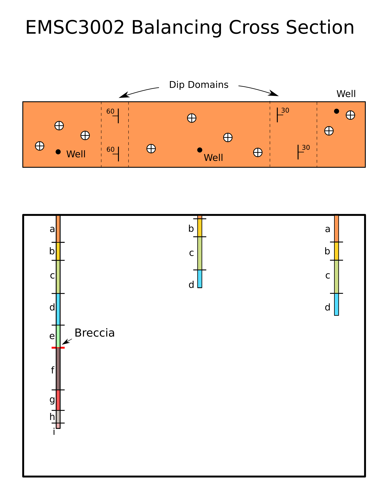
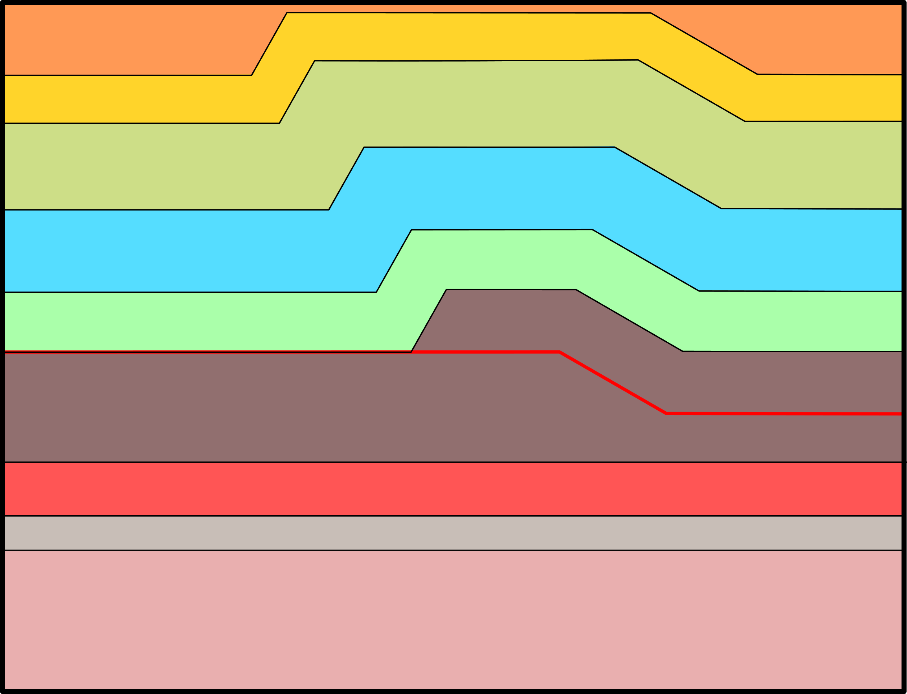
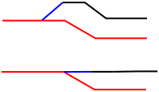
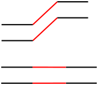
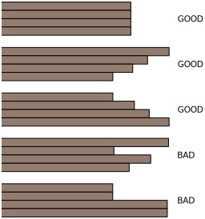
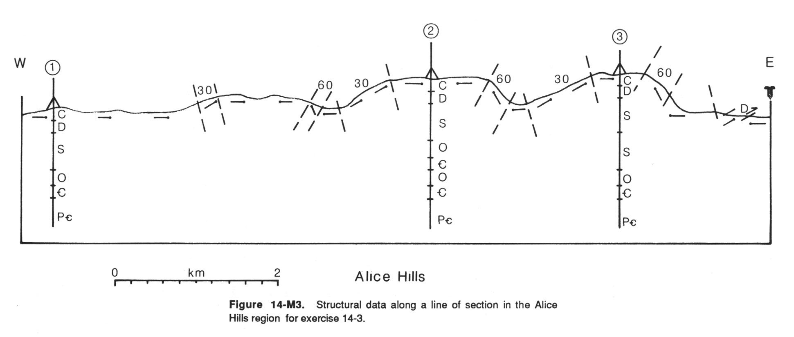

Balancing & Restoring Cross Sections#
Objective#
The goal of this lab is to aid you in understanding how structural geologists go about balancing cross sections and to make you see that there are many ways of interpreting data. Our goal is simply to make you aware of how cross section balancing is done and introduce you to the general concepts involved.
Structure of the lab#
First 30 minutes
Start by reading the rest of the lab handout. We’ll go over some of the goals of the lab and introduce the terminology.
Next 30 Minutes
Work through Problem 1 by building a simple cross section. (Attached). Work through Problem 2, which is appropriately entitled “Restoring a Cross Section”). All I want you to do here is see how the distances measured in the deformed section correspond to the distances in the restored section. You can use a compass or a ruler for this, whichever works best, and quickest, for you.
Rest of the Prac
Take the opportunity to begin working on the problem set for this week (Problem 3), creating and restoring the cross section on the last page of this handout.
Constructing & Restoring Balanced Cross Sections#
Introduction#
You are all experienced at drawing cross sections that help you visualize subsurface geology. You cn also use cross sections to quantify the amount of brittle deformation by measuring the offset across faults. But what if you wanted to reliably determine the amount of deformation in a faulted and folded region? It turns out that this problem is much more complex and we must therefore have a series of rules to help us construct cross sections that will allow us to easily extract this information. This lab handout will tell you how to construct simple versions of these “balanced” cross sections. It will also teach you how to “restore” the cross section as described in the simple experiment above. By comparing the deformed state cross section with the restored cross section, we can get a complete quantitative picture of brittle and ductile deformation.
Balanced cross sections are most useful in fold-thrust belts. Some examples of fold-thrust belts include the Appalachian Mountains, the Swiss Jura Mountains, Taiwan, and the foothills of the Canadian Rockies.
Terminology#
Balanced Cross Section: This is a deformed cross section that is capable of being kinematically restored. Unless you exercise great care when drawing your cross section, you won’t be able to restore it. For example, you could end up with big cavities or left-over material that has no place to go when you try to restore the cross section.
Blind Thrust: A thrust fault that does not reach the surface, but may cause folding and upwarping that can be observed at the surface.
Cutoff angle: The acute angle between a fault ramp and the attitude of the bedding that the ramp cuts through (fault dip – bedding dip; must be < 90°.
Deformed Cross Section: This is what you usually think of when you think of cross sections. They represent a geometric model of the subsurface geology.
Emergent Thrust: A thrust fault that does intersect the surface.
Flat: Fault that runs parallel to bedding.
Ramp: A fault that cuts across bedding, usually connecting two flats.
Fold and Thrust Belt: Areas that form as a result of crustal shortening where contraction is accommodated by thrust faults and associated folding.
Foreland: The undeformed region in front of a thrust belt.
Hinterland: The area behind an orogenic belt.
Loose line: A line in a cross section that is distorted during deformation.
Pin line: A line in the cross section that remained stationary and is therefore the sam in both the deformed and restored cross section.
Restored Cross Section: A model of what the subsurface may have looked like before deformation. Our goal for this lab is to take a deformed cross section and kinematically restore it.
Transport Direction: The vector that points in the direction that the thrust sheet moves relative to the pin line.
Choosing a Pin Line#
In nature, it’s often hard to tell which side stayed still while the other moved. From physics classes, you may recall that all motion is relative and all we really need to do is choose a reference frame. We usually select the edge of the cross section on the foreland side (on the footwall side of the thrusts). If that’s not possible, you should use the following criteria:
perpendicular to undeformed bedding
most undeformed portion of section
most complete stratigraphic section
Must not cross a fault
In complex cross sections, you may need to choose several “local” pin lines. Local pin lines remain undeformed, but may move with respect to one another. The loose line is usually just the other edge of the cross section.
Assumptions#
The construction and restoration of balanced cross sections requires several simplifying assumptions in order to make the process convenient. As always, think about how realistic these assumptions are.
Conservation of Area#
The cross sectional area of a bed must be the same in both deformed and restored cross sections. The validity of this assumption depends largely on the validity of the plane-strain assumption (below).
Consistency of Bed Length#
The length of a contact in a cross section does not change from the deformed to the restored cross sections. This is only true when there is no thinning or thickening of beds at the fold hinges. It follows from the Conservation of Area: area = bed thickness * bed length, so if bed thickness is constant, area is conserved by using consistent contact lengths. Cross section restoration is a bit harder when bed thickness changes but is definitely possible.
Plain Strain#
We assume that no material has moved into or out of the page of the cross section. This assumption works well for faults that are relatively long and straight in map-view.
“In-Sequence Thrusting”#
Studies show that not all the faults in a fold-thrust belt form and slip at the same time. Studies often find that the faults closest to the foreland are usually youngest and the faults closest to the hinterland are oldest (think of the snow plow). While faults that form out of this sequence have been reorganized, when we restore cross sections we will assume that faults “break forward” and always follow the simple younger-in-the-foreland sequence.
Forward Ramping Faults#
We assume that faults always ramp “forward.” That means that when moving across your cross section in the direction of transport, ramps always cut up-section. Slip along these ramps results in the repeating of sequences of stratigraphy and can put older rocks on top of younger rocks.
Kink-Style Folds#
Kink folds have relatively straight limbs and all of the deformation is concentrated in the fold hinge. Chevron folds are classic examples of kinked folds and most fault-bend folds are relatively kinked. It’s a lot easier to draw and restore cross sections for kink style folds because we can use simple trigonometry to calculate angles and we can use rulers to measure bed length. For that reason, you’ll often see cross sections drawn in a distinctive boxy and kinked style.
Many thrust faults are blind and do not reach the surface, so how do you represent them on a cross section? It turns out that some relatively simple geometry can tell you the dip of a blind fault ramp if you know the dip of fault-bend folds on the surface (see Suppe, 1983, 1985). For example, if is the cutoff angle:
\(2\gamma\) supplement of forelimb dip
Creating Balanced Cross Sections: Procedure#
Problem 1#
Given the strip map of a portion of a fold-thrust belt, follow the method listed on the next page to construct an admissible deformed-state cross section that accommodates the map data. Assume that the ground surface is a horizontal plane. The only unit exposed at the surface is unit a.

Method#
Examine the map of a region know to be a fold and thrust belt.
Determine the transport direction.
Take note of any mapped faults and determine the transport direction from those faults. We assume that the footwall is stationary, so the transport direction is the map-view projection of the slip vector. For a pure thrust fault, the slip direction is along the dip line, so the transport direction is the dip direction.
Even though there may not be any mapped faults, there may be blind faults beneath the surface. In cases where there are no mapped faults, you must determine the transport direction from other information.
Start the same way you do for any other cross section.
Pick a cross section line.
Draw a topographic profile.
Project your control points along strike.
Calculate and plot apparent dips for each control point.
Determine the location of fold hinges. Unless you have other information, they should be half way between two control points.
Draw the trace of axial planes by bisecting the angle between the two control points. (Note: this only works if you assume uniform bed thickness in each limb. In kink-style folds, axial planes divide “dip domains.” To Bisect an angle using a compass:
Set the compass needles a small distance apart.
Place the sharp end of the compass on the vertex (where the two arrows meet below).
Draw a tick mark at the other end of the compass across each of the fold limbs.
Place the sharp end on one of the two ticks. Draw a circle (or portion thereof)- Move the sharp end to the other point and draw a circle.
Where the two circles intersect is the angle bisector.
That means that the dip should be the constant in-between two axial planes. Dip domains are also bounded by faults, so when you hit a fault, you can no longer assume that the dip will be the same on the other side of the fault.
Draw in any subsurface control from boreholes by measuring off the depth of each unit below the borehole location.
Starting at the surface, start drawing in layers. It’s best to draw your cross section in the direction of transport. You determine the depth of the contacts from your sub-surface and surface observations of contact locations. You determine the angular orientation of the contact by its dip domain. All lines in the same dip domain must have the same orientation.
It’s possible that there is a fault at depth causing the folding at the surface. To constrain the depth of the fault, use the following indicators:
If you have two axial planes that intersect at some depth, the only thing you can say for sure is that the fault must be at the depth of intersection or shallower.
Is there a fault at the surface?
Is there a fault in a borehole?
Does a borehole show a repeated stratigraphic sequence or are units missing from the stratigraphic sequence seen in other boreholes?
Faults need to have a ramp in order to produce fault-bend folds. Ramps should have the same dip as other beds in their dip domain. Also, remember that they usually cut up-section when looking in the direction of transport.
Flats along the thrust fault and footwall strata should have the same dip as the regional dip. You can identify the regional dip as being a dip domain that occurs in the undeformed strata on both sides of a fold.
Continue filling in the cross section by adding lithologic contacts at the appropriate depth required by boreholes and with the appropriate orientations required by the dip domains.
Restoring a Cross Section: Procedure#
Problem 2#
Follow the method provided and restore the labeled cross section shown below. Assume that unit thickness is constant in the section, and assume that the displacement is constant along the fault. Complete on a separate paper.

Method#
Identify the foreland and hinterland
Identify the Transport Direction
Choose a Pin Line
Label each point where the trace of the axial plane of a fold crosses a contact. These points will define the end-points of line segments.
Reproduce the pin line on the sheet where you will draw your restored cross section.
Do beds thicken or thin at fold axes? If not, you can restore faults by the conservation of bed length. If they do thicken, you’ll need to use the more complex conservation of area.
Start by restoring the youngest faults first. These are the faults closest to the foreland. In the simplest case where the pin line is the foreland edge of the cross section, you start by restoring faults closest to the pin line and slowly work your way against the transport direction. Consideration of the sequence of faulting forces you to determine whether you understand the evolution of structures portrayed in the cross section.
To Restore by Bed Length Conservation…#
Measure the length of the first line segment on the footwall of the youngest fault. For the simplest case, this should be the first line segment adjacent to the pin line.
Draw a horizontal line segment with the length that you measured above.
Repeat for each line segment.
If you encounter a point where the contact on the top of a unit intersects a fault, you’ll need to restore it differently. This time, follow the fault in the direction opposite the Transport Direction until you hit the ramp. Draw a horizontal line segment at the top of the ramp with the same length as you measured above for the line segment.

If you encounter a folded layer in the deformed cross section that does not intersect a fault, simply reproduce it as a horizontal line in the restored section.

Faults should be reproduced as they are (without making lines horizontal) unless they show signs of being folded by younger stage faulting. This is part of why we restore youngest faults first!
At the end, look at the loose line of your cross section (probably the edge opposite from the pin line). If the loose line is bad, either your cross section is not balanced or your cross section restoration is bad.

Problem 3#
The geologist working on a cross section of the Alice Hills region has been called off on another project. You are left to develop a cross-sectional interpretation of the region. Your predecessor has left several useful hints to make the task easier; you have access to a partially completed cross section (next page). Note that the region displays kink-style folds and that the dip-domain boundaries are already labeled. The dip angles in the nonhorizontal domains are indicated. Note that there are well data at three localities. If you measure closely, you will see that the Silurian layer in hole 3 is almost twice as thick as in the other two holes. The upper interval of Silurian strata is not as thick as the lower interval. Finally, studies elsewhere in the region suggest that beds have uniform thickness in the region and that detachment horizons occur along formation contacts.

Tasks#
Complete the cross section by showing the structure between the ground surface and the Precambrian/Cambrian contact. You must choose detachment levels, position ramps, and indicate the amount of slip on each ramp.
Restore your completed section. Does it balance?
Some hints/suggestions/questions for this exercise:#
Remember that the upper Silurian unit that is repeated under borehole #3 is slightly less thick than the lower, complete unit. This means that the fault-bend fold has not yet developed to full vertical relief. As far as your cross section goes, this means that the down-thrust dip domain trace will not necessarily intersect the fault trace at the fault ramp-flat interface. Keep this in mind.
Notice under borehole #2 that the Cambrian unit is repeated so that the sequence there is Cambrian-Ordovician-Cambrian.
There are three distinct fault-bend folds seen here that are expressed at the surface. This means there must be three distinct ramps at depth.
Indicate which direction is the direction of transport. When restoring, start in the East and restore West (in the direction opposite to thrusting). Remember, you should always restore younger faults first…it’s easier.
Why is it impossible to accurately restore the Devonian and Carboniferous units in this cross section?